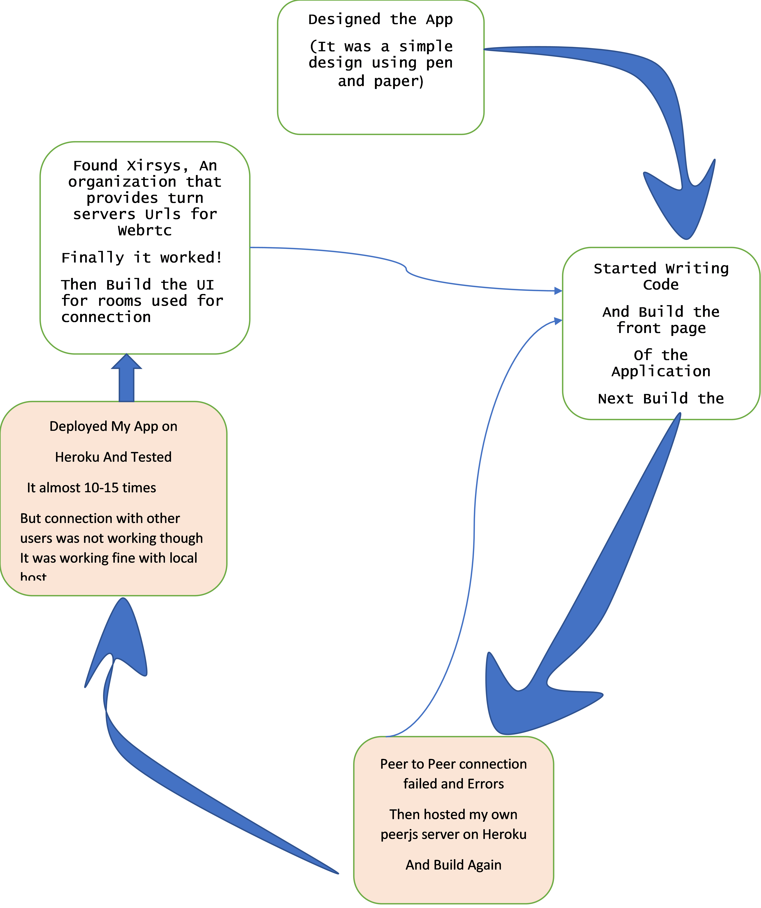
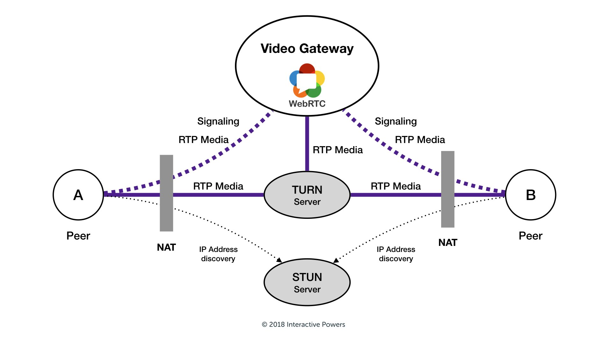

What I learned during my project?
In this section I am going to list some of the techinical and non-techinical information I learned.
1. Agile Methodology
What is Agile Methodology
- It is an iterative approach that is used to design complicated software.
- In this method, project teams are allowed to be more flexible
- ensure that the final product is fulfilling the customer’s requirements.
- It develops customer-centric products and delivers in shorter sprints.
This is how I implemented the Agile Methodology in my project:
- Designed a structure of the clone interface.
- Build a application before the build phase started but it failed. Build the application again.
- Created the BeckEnd part and tested on local host.
- Came to know about flaws of using peerjs server, that's why hosted my own peerjs server
- deployed app on heroku server and tested with a friend
- Research on why the connection failed and how it can be established
- Got a solution: xirsys provides free turn server urls, thanks to xirsys.
- included the turn server. Deployed and tested again.
- This time it worked but it failed while testing with my mentor when I
she was using her laptop. Came to know about the reason.
- Here I want to mention some of the fixes if user1 is not
able to get user2 video
-
Try Connecting using Edge, as sometimes there is security issue with Chrome
-
Try connecting using Phone as my mentors laptop was provided by Microsoft so was not supporting the app, as she told me it was compatible with MS Teams only
-
In all other normal cases the app would work fine.
- 
-
- Here I want to mention some of the fixes if user1 is not
able to get user2 video
2. Why actually turn servers issue occurs and why was peer to peer not working?
I think writing on this issue might help others as well who will try to deploy their their application without using services like Azure or AWS.
The issue occurs due to following reasons when one tries to connect using webrtc:
-
Stun servers used in connection using webrtc are unable to get other user's video and audio when:
- firewall comes in between
- NAT comes in between
-
Then turn servers comes to rescue, instead of direct peer to peer connection, turn servers establishes the conncetion by relaying the traffic themselves.
-
Here is the situation described :
- 
3. How to write documentation using jsdocs?
-
Documentation and Code Architecture is very important for any Project for other's to understand our project structure and code.
- I came to know about code architecture from my mentor and included it as well in the tutorial.
- Here are some of the things I struggled a lot to figure out, hope they might help others.
- We can host our documentation separately using github pages by hosting only the docs directory.
- And we can deploy our application on Heroku along with the docs folder no need to remove it while deploying.
- Should not add docs in .gitignore otherwise they won't be hosted on github
-
How to include images in documentation
- we can include static files in default template of jsdoc then use img tag to include images.
- It's available in the documentation of better-docs
4. Of course I learned a lot of new technologies!
- since I had never build a beckend application before I learned:
- react though I figured out I can build this project without using React
- beckend Development using nodejs and express
- how requests and response works
- how frontend actually interacts with beckend
- webrtc, socket.io and peerjs
- how turn and stun servers work
5. Lastly here are the few non-technical things I learned:
- Just try it!
- I had no plan of working on this project thinking that if I will work on it, then I would lose my time to study for internships coming in July.
- But then I realised if I am scared to take up the challenge then I must definitely try it once, I might fail but it's better than losing confidence due to fear of failure.
- Just know why you are doing something.
- There is always a solution
- When I encountered the turn server issue I spend two days searching for the solution but found nothing, but then one of my friend helped me in finding Xirsys Turn server
- And I also discovered about Microsoft Azure and Amazon's AWS free trial services that might have helped me.
- But finally the issue was solved.
- Design as if you are the consumer of the product
- I designed the UI thinking how I would like to see it if I have to use it for video chat app.
- Keeping this in mind help us to design user friendly UI.
- The reason for not being able to incorporate chat feature fully in the app
- As mentioned in the code architecture the chat feature works when the user is in the call and not after or before the call and it is yet to be implemented
- The reason I was not able to complete it was I had my exams from 12th July and I had to prepare.